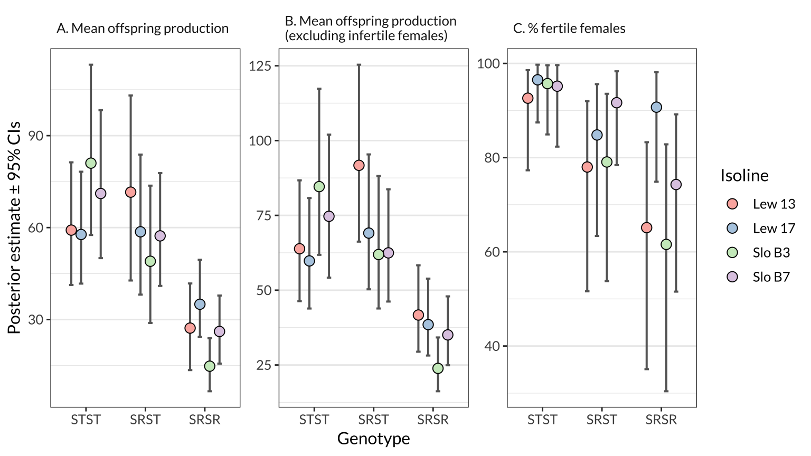

Statistical analysis
Last updated: 2019-07-02
Checks: 6 0
Knit directory: cost_of_SR_Dpseudo/
This reproducible R Markdown analysis was created with workflowr (version 1.3.0). The Checks tab describes the reproducibility checks that were applied when the results were created. The Past versions tab lists the development history.
Great! Since the R Markdown file has been committed to the Git repository, you know the exact version of the code that produced these results.
Great job! The global environment was empty. Objects defined in the global environment can affect the analysis in your R Markdown file in unknown ways. For reproduciblity it’s best to always run the code in an empty environment.
The command set.seed(20190319) was run prior to running the code in the R Markdown file. Setting a seed ensures that any results that rely on randomness, e.g. subsampling or permutations, are reproducible.
Great job! Recording the operating system, R version, and package versions is critical for reproducibility.
Nice! There were no cached chunks for this analysis, so you can be confident that you successfully produced the results during this run.
Great! You are using Git for version control. Tracking code development and connecting the code version to the results is critical for reproducibility. The version displayed above was the version of the Git repository at the time these results were generated.
Note that you need to be careful to ensure that all relevant files for the analysis have been committed to Git prior to generating the results (you can use wflow_publish or wflow_git_commit). workflowr only checks the R Markdown file, but you know if there are other scripts or data files that it depends on. Below is the status of the Git repository when the results were generated:
Ignored files:
Ignored: .DS_Store
Ignored: .Rhistory
Ignored: .Rproj.user/
Ignored: output/.DS_Store
Note that any generated files, e.g. HTML, png, CSS, etc., are not included in this status report because it is ok for generated content to have uncommitted changes.
These are the previous versions of the R Markdown and HTML files. If you’ve configured a remote Git repository (see ?wflow_git_remote), click on the hyperlinks in the table below to view them.
| File | Version | Author | Date | Message |
|---|---|---|---|---|
| Rmd | 2ef4d13 | lukeholman | 2019-07-02 | re-run model |
| html | 52ea758 | lukeholman | 2019-06-28 | Build site. |
| Rmd | 44d4565 | lukeholman | 2019-06-28 | First complete commit |
| html | e2cfeac | lukeholman | 2019-06-28 | Build site. |
| Rmd | fc7812e | lukeholman | 2019-06-28 | First complete commit |
| html | 93aec6e | lukeholman | 2019-06-28 | Build site. |
| Rmd | 01d7dbb | lukeholman | 2019-06-28 | First complete commit |
| html | 8c6e0c3 | lukeholman | 2019-06-28 | Build site. |
| Rmd | ffdc5d4 | lukeholman | 2019-06-28 | First complete commit |
| html | ffdc5d4 | lukeholman | 2019-06-28 | First complete commit |
Load R libraries
library(tidyverse)
library(brms)
library(bayestestR)
library(kableExtra)
library(ggbeeswarm)
library(RColorBrewer)
library(showtext)
font_add_google(name = "Lato", family = "Lato", regular.wt = 400, bold.wt = 700)
showtext_auto()
options(stringsAsFactors = FALSE)
SE <- function(x) sd(x) / sqrt(length(x))Load the data
fitness_data <- read_csv("data/SR_fitness_data.csv") %>%
filter(!is.na(genotype)) %>%
rename(body_size = `Body size`,
female_age = `F age`) %>%
mutate(genotype = factor(genotype, levels = c("STST", "SRST", "SRSR")))Make a table of summary statistics and sample sizes
Here, we calculate the mean offspring produced by females from each of the three genotypes (STST, SRST, and SRSR), either within each isoline or across all the isolines. We also calculate the % females that failed to produce any offspring, and provide sample size information.
means_by_isoline <- fitness_data %>%
group_by(genotype, Isoline) %>%
summarise(
Number_of_females_measured = n(),
Mean_offspring_per_female = mean(offspring),
SE = SE(offspring),
n_females_producing_offspring = sum(offspring != 0),
Percent_females_producing_offspring = 100 * n_females_producing_offspring / n())
means <- fitness_data %>%
mutate(Isoline = "Across all isolines") %>%
group_by(genotype, Isoline) %>%
summarise(
Number_of_females_measured = n(),
Mean_offspring_per_female = mean(offspring),
SE = SE(offspring),
n_females_producing_offspring = sum(offspring != 0),
Percent_females_producing_offspring = 100 * n_females_producing_offspring / n())
bind_rows(means_by_isoline, means) %>%
rename_all(function(x) gsub("_", " ", x)) %>%
rename_all(function(x) gsub("Percent", "%", x)) %>%
rename(Genotype = genotype) %>%
kable(digits = 2) %>% kable_styling()| Genotype | Isoline | Number of females measured | Mean offspring per female | SE | n females producing offspring | % females producing offspring |
|---|---|---|---|---|---|---|
| STST | Lew 13 | 37 | 57.81 | 6.46 | 35 | 94.59 |
| STST | Lew 17 | 40 | 56.85 | 5.04 | 39 | 97.50 |
| STST | Slo B3 | 40 | 76.67 | 5.59 | 39 | 97.50 |
| STST | Slo B7 | 35 | 71.14 | 4.71 | 34 | 97.14 |
| SRST | Lew 13 | 39 | 72.82 | 8.70 | 32 | 82.05 |
| SRST | Lew 17 | 37 | 56.24 | 8.11 | 32 | 86.49 |
| SRST | Slo B3 | 31 | 49.10 | 5.20 | 26 | 83.87 |
| SRST | Slo B7 | 39 | 55.26 | 7.07 | 36 | 92.31 |
| SRSR | Lew 13 | 36 | 28.58 | 5.92 | 25 | 69.44 |
| SRSR | Lew 17 | 37 | 32.19 | 3.91 | 34 | 91.89 |
| SRSR | Slo B3 | 31 | 17.19 | 4.56 | 22 | 70.97 |
| SRSR | Slo B7 | 38 | 25.50 | 4.76 | 28 | 73.68 |
| STST | Across all isolines | 152 | 65.59 | 2.81 | 147 | 96.71 |
| SRST | Across all isolines | 146 | 58.89 | 3.83 | 126 | 86.30 |
| SRSR | Across all isolines | 142 | 26.21 | 2.45 | 109 | 76.76 |
Fit a model to the data
Run the Bayesian hurdle model
The model assumes that the response variable, offspring number, is the result of a ‘hurdle’ process. Essentially this means that the model consists of two sub-models: one controlling the probability that offspring number is non-zero, and one controlling the number of offspring produced provided that more than zero are produced (we assume that offspring number follows a negative binomial distribution, because this improved model fit relative to the simpler hurdle-Poisson model).
We assume that the parameters controlling both the hurdle and the distribution of non-zero values are affected by four fixed effects (the female’s genotype: STST, SRST, or SRSR), her isoline, the female’s age, and the interaction between genotype and isoline. We also fit two random effects: isoline, and experimental block. All fixed effects were assumed to have a prior distribution following a normal distribution with mean 0 and SD = 5.
if(!file.exists("output/brms_model.rds")){
# The hurdle and the mean have the same set of predictors
model_formula <- bf(
offspring ~ genotype * Isoline + female_age + (1 | Block),
hu ~ genotype * Isoline + female_age + (1 | Block)
)
# Find R^2 for a brms model, and its 95% CIs, and present neatly
neat_R2 <- function(model){
R2 <- bayes_R2(model) %>% round(2)
paste(R2[1,1], " (95% CIs = ", R2[1,3], "-", R2[1,4], ")", sep = "")
}
# We set conservative, "regularising" priors - see McElreath's "Statistical Rethinking" textbook
model_prior <- c(set_prior("normal(0, 3)", class = "b"),
set_prior("normal(0, 3)", class = "b", dpar = "hu"))
model <- brm(model_formula,
family = "hurdle_negbinomial",
chains = 4, cores = 1, iter = 8000, inits = 0, seed = 12345,
control = list(adapt_delta = 0.999, max_treedepth = 15),
prior = model_prior,
data = fitness_data)
saveRDS(model, file = "output/brms_model.rds")
saveRDS(neat_R2(model), file = "output/R2_of_brms_model.rds")
} else model <- readRDS("output/brms_model.rds")Graphically verify the model using a posterior predictive check
The idea behind posterior predictive checking is that if our model is a good fit, then we should be able to use it to generate a dataset which looks a lot like the dataset we actually observed. Here, we see 11 draws from the ‘posterior predictive distribution’ (pale blue), which indeed look quite similar to the distribution of the real data (dark blue), suggesting that our model is a good enough approximation of the true data-generating process for reliable inference.
pp_check(model, type = "hist", nsamples = 11, binwidth = 5)
| Version | Author | Date |
|---|---|---|
| ffdc5d4 | lukeholman | 2019-06-28 |
Inspect the model’s parameter estimates
bayesian_p_values <- as.data.frame(p_direction(model)) %>%
mutate(pd = (100 - pd) / 100,
Parameter = gsub("[.]", ":", gsub("b_", "", Parameter)))
random <- as.data.frame(summary(model)$random[[1]]) %>%
rownames_to_column("Parameter") %>%
mutate(p = NA,
Parameter = c("sd(Block - Intercept)", "sd(Block - Hurdle intercept)"))
summary(model)$fixed %>% as.data.frame() %>%
rownames_to_column("Parameter") %>%
left_join(bayesian_p_values, by = "Parameter") %>%
rename(p = pd) %>% arrange(grepl("hu_", Parameter)) %>%
rbind(random) %>%
mutate(Parameter = gsub("hu_", "Hurdle - ", Parameter),
Estimate = format(round(Estimate, 3), nsmall = 3),
Est.Error = format(round(Est.Error, 3), nsmall = 3),
` ` = ifelse(p < 0.05, "*", ""),
` ` = replace(` `, is.na(` `), ""),
p = format(round(p, 4), nsmall = 4),
Rhat = format(round(Rhat, 3), nsmall = 3),
`l-95% CI` = format(round(`l-95% CI`, 3), nsmall = 3),
`u-95% CI` = format(round(`u-95% CI`, 3), nsmall = 3),
Eff.Sample = round(Eff.Sample, 0)
) %>%
kable() %>% kable_styling()| Parameter | Estimate | Est.Error | l-95% CI | u-95% CI | Eff.Sample | Rhat | p | |
|---|---|---|---|---|---|---|---|---|
| Intercept | 4.048 | 0.269 | 3.520 | 4.575 | 12066 | 1.000 | 0.0000 |
|
| genotypeSRST | 0.362 | 0.169 | 0.034 | 0.692 | 6284 | 1.000 | 0.0156 |
|
| genotypeSRSR | -0.429 | 0.184 | -0.784 | -0.067 | 6408 | 1.000 | 0.0109 |
|
| IsolineLew17 | -0.065 | 0.164 | -0.381 | 0.258 | 7275 | 1.000 | 0.3425 | |
| IsolineSloB3 | 0.281 | 0.165 | -0.041 | 0.610 | 7169 | 1.000 | 0.0453 |
|
| IsolineSloB7 | 0.156 | 0.169 | -0.175 | 0.493 | 7443 | 1.000 | 0.1784 | |
| female_age | 0.024 | 0.057 | -0.091 | 0.136 | 25065 | 1.000 | 0.3369 | |
| genotypeSRST:IsolineLew17 | -0.219 | 0.243 | -0.693 | 0.252 | 7324 | 1.000 | 0.1839 | |
| genotypeSRSR:IsolineLew17 | -0.013 | 0.253 | -0.510 | 0.473 | 7164 | 1.000 | 0.4832 | |
| genotypeSRST:IsolineSloB3 | -0.677 | 0.256 | -1.180 | -0.182 | 8021 | 1.000 | 0.0047 |
|
| genotypeSRSR:IsolineSloB3 | -0.842 | 0.265 | -1.359 | -0.320 | 7635 | 1.000 | 0.0008 |
|
| genotypeSRST:IsolineSloB7 | -0.539 | 0.242 | -1.012 | -0.060 | 7571 | 1.000 | 0.0119 |
|
| genotypeSRSR:IsolineSloB7 | -0.328 | 0.263 | -0.846 | 0.180 | 7455 | 1.000 | 0.1063 | |
| Hurdle - Intercept | -1.473 | 1.163 | -3.727 | 0.817 | 12506 | 1.000 | 0.1013 | |
| Hurdle - genotypeSRST | 1.415 | 0.717 | 0.059 | 2.887 | 8704 | 1.000 | 0.0200 |
|
| Hurdle - genotypeSRSR | 2.109 | 0.698 | 0.771 | 3.505 | 9094 | 1.000 | 0.0006 |
|
| Hurdle - IsolineLew17 | -0.976 | 1.010 | -3.089 | 0.888 | 8175 | 1.000 | 0.1629 | |
| Hurdle - IsolineSloB3 | -0.732 | 0.991 | -2.771 | 1.110 | 8117 | 1.000 | 0.2321 | |
| Hurdle - IsolineSloB7 | -0.641 | 1.034 | -2.809 | 1.266 | 8579 | 1.000 | 0.2712 | |
| Hurdle - female_age | -0.322 | 0.238 | -0.793 | 0.139 | 27154 | 1.000 | 0.0880 | |
| Hurdle - genotypeSRST:IsolineLew17 | 0.480 | 1.149 | -1.685 | 2.831 | 8646 | 1.000 | 0.3469 | |
| Hurdle - genotypeSRSR:IsolineLew17 | -0.846 | 1.195 | -3.115 | 1.591 | 9085 | 1.000 | 0.2361 | |
| Hurdle - genotypeSRST:IsolineSloB3 | 0.647 | 1.148 | -1.531 | 2.964 | 9053 | 1.000 | 0.2890 | |
| Hurdle - genotypeSRSR:IsolineSloB3 | 0.890 | 1.103 | -1.161 | 3.129 | 8540 | 1.000 | 0.2124 | |
| Hurdle - genotypeSRST:IsolineSloB7 | -0.593 | 1.231 | -2.953 | 1.871 | 9058 | 1.000 | 0.3096 | |
| Hurdle - genotypeSRSR:IsolineSloB7 | 0.181 | 1.131 | -1.953 | 2.485 | 8636 | 1.000 | 0.4470 | |
| sd(Block - Intercept) | 0.184 | 0.156 | 0.011 | 0.568 | 4120 | 1.002 | NA | |
| sd(Block - Hurdle intercept) | 0.570 | 0.532 | 0.025 | 1.947 | 4627 | 1.001 | NA |
Use the model to generate posterior estimates of group means
Generate posterior predictions of the group means
Here, we estimate the mean for three measures of female fitness using the model, for each genotype (across all isolines) and for each genotype-isoline combination. The model adjusts for variation due to experimental block and female age.
# Define the data for prediction. We use the average values for continuous predictors like female age
new <- fitness_data %>% select(genotype, Isoline, body_size, female_age) %>%
mutate(body_size = mean(body_size, na.rm = TRUE),
female_age = mean(female_age)) %>%
distinct()
# Find the posterior medians and 95% CIs for each genotype/isoline combination
predicted_mean <- data.frame(new, fitted(model, newdata = new, re_formula = NA)) %>%
mutate(facet = "A. Mean offspring production")
predicted_mean_when_fertile <- data.frame(new, fitted(model, newdata = new, dpar = "mu", re_formula = NA)) %>%
mutate(facet = "B. Mean offspring production\n(excluding infertile females)")
predicted_prop_fertile <- data.frame(new, fitted(model, newdata = new, dpar = "hu", re_formula = NA)) %>%
mutate(facet = "C. % fertile females",
Estimate = 100 * (1 - Estimate), # Convert to percentage of fertile females, instead of *proportion* that are *in*fertile
Q2.5 = (1 - Q2.5) * 100,
Q97.5 = (1 - Q97.5) * 100)
# Get the posterior averaged across the isolines
posterior_means <-
data.frame(new, as.data.frame(t(fitted(model, newdata = new, re_formula = NA, summary = FALSE)))) %>%
select(-body_size, -female_age, -Isoline) %>%
group_by(genotype) %>%
summarise_all(mean) %>% select(-genotype) %>% t() %>% as.data.frame() %>%
rename(STST = V1, SRST = V2, SRSR = V3)
predicted_mean_all_iso <- data.frame( # Summarise it, for Figure 1
genotype = c("STST", "SRST", "SRSR"), Isoline = "All",
posterior_means %>% lapply(posterior_summary) %>% do.call("rbind", .),
facet = "A. Mean offspring production")
posterior_means_when_fertile <-
data.frame(new, as.data.frame(t(fitted(model, newdata = new, dpar = "mu", re_formula = NA, summary = FALSE)))) %>%
select(-body_size, -female_age, -Isoline) %>%
group_by(genotype) %>%
summarise_all(mean) %>% select(-genotype) %>% t() %>% as.data.frame() %>%
rename(STST = V1, SRST = V2, SRSR = V3)
predicted_mean_when_fertile_all_iso <- data.frame(
genotype = c("STST", "SRST", "SRSR"), Isoline = "All",
posterior_means_when_fertile %>% lapply(posterior_summary) %>% do.call("rbind", .),
facet = "B. Mean offspring production\n(excluding infertile females)")
posterior_means_prop_fertile <-
data.frame(new, as.data.frame(t(fitted(model, newdata = new, dpar = "hu", re_formula = NA, summary = FALSE)))) %>%
select(-body_size, -female_age, -Isoline) %>%
group_by(genotype) %>%
summarise_all(~ 100 * (1 - mean(.x))) %>% select(-genotype) %>% t() %>% as.data.frame() %>%
rename(STST = V1, SRST = V2, SRSR = V3)
predicted_prop_fertile_all_iso <- data.frame(
genotype = c("STST", "SRST", "SRSR"), Isoline = "All",
posterior_means_prop_fertile %>% lapply(posterior_summary) %>% do.call("rbind", .),
facet = "C. % fertile females")
# Concatenate the predictions into one data frame for plotting
preds_figure1 <- bind_rows(predicted_mean_all_iso,
predicted_mean_when_fertile_all_iso,
predicted_prop_fertile_all_iso) %>%
mutate(genotype = factor(genotype, levels = c("STST", "SRST", "SRSR")))
preds_figure2 <- bind_rows(predicted_mean,
predicted_mean_when_fertile,
predicted_prop_fertile) %>%
mutate(facet = factor(facet, levels = unique(facet)),
genotype = factor(genotype, levels = c("STST", "SRST", "SRSR"))) %>%
select(-body_size, -female_age)Plot the posterior predictions of the group means
beeswarm_points <- bind_rows(
fitness_data %>% mutate(facet = "A. Mean offspring production"),
fitness_data %>% filter(offspring != 0) %>% mutate(facet = "B. Mean offspring production\n(excluding infertile females)")) %>%
mutate(Fertility = ifelse(offspring == 0, "Sterile", "Fertile"),
genotype = factor(genotype, levels = c("STST", "SRST", "SRSR"))) %>%
rename(Estimate = offspring)
pos1 <- position_nudge(x = -0.17)
pal <- c(brewer.pal(4, "RdPu")[2], brewer.pal(7, "Purples")[5])
figure_1 <- preds_figure1 %>%
ggplot(aes(genotype, Estimate)) +
geom_errorbar(aes(ymin = Q2.5, ymax = Q97.5), colour = "grey20", position = pos1, size = .8, width = 0.1) +
geom_beeswarm(data = beeswarm_points, aes(colour = Fertility),
size = .7, alpha = 0.6) +
geom_point(size = 3.1, pch = 21, colour = "black", position = pos1, fill = "grey20") +
scale_colour_manual(values = pal) +
facet_wrap(~facet, scale = "free_y") +
labs(y = "Posterior estimate \u00B1 95% CIs", x = "Genotype") +
theme_bw() +
theme(strip.background = element_blank(),
text = element_text(family = "Lato", size = 12),
panel.grid.major.x = element_blank(),
strip.text = element_text(hjust = 0))
dodge <- position_dodge(0.66)
figure_2 <- preds_figure2 %>%
ggplot(aes(genotype, Estimate, fill = Isoline)) +
geom_errorbar(aes(ymin = Q2.5, ymax = Q97.5), size = .7, width = 0.3, colour = "grey40", position = dodge) +
geom_point(size = 3.1, pch = 21, colour = "black", position = dodge) +
facet_wrap(~facet, scale = "free_y") +
scale_fill_brewer(palette = "Pastel1") +
labs(y = "Posterior estimate \u00B1 95% CIs", x = "Genotype") +
theme_bw() +
theme(strip.background = element_blank(),
text = element_text(family = "Lato", size = 12),
panel.grid.major.x = element_blank(),
strip.text = element_text(hjust = 0))
figure_1 %>% ggsave(filename = "figures/figure_1.pdf", width = 9, height = 4)
figure_2 %>% ggsave(filename = "figures/figure_2.pdf", width = 9, height = 4)figure_1
| Version | Author | Date |
|---|---|---|
| ffdc5d4 | lukeholman | 2019-06-28 |
figure_2
Calculate pairwise differences between genotypes
Table 1: Pairwise comparisons of genotypes for three measures of female fitness: mean offspring production, mean offspring production (not including females that produced zero offspring), and the % females that produced at least one offspring. The difference in means column shows the posterior estimate of the difference in means in its original units (i.e. offspring, or percentage points), where a negative difference means that genotype with more copies of SR has lower female fitness (parentheses show the 95% quantiles of this posterior, and the Est.Error column gives the average deviation from the mean). The relative difference column expresses the difference in relative terms; e.g. the first row shows that mean number of offspring produced by SRST females was 87.7% as much as that of STST females. Finally, the p column shows the posterior probability that the true difference in means is zero or of the opposite sign to the estiamte shown here (similar to a conventional p-value).
compare_means <- function(mean1, mean2, posterior){
difference <- posterior[, mean2] - posterior[, mean1]
relative <- median(posterior[, mean2] / posterior[, mean1])
p_value <- as.numeric(100 - p_direction(difference)) / 100
as_tibble(posterior_summary(as.mcmc(difference))) %>%
mutate(Comparison = paste(mean1, mean2, sep = " \u2192 "),
`Relative difference` = paste(format(round(100 * relative, 1), nsmall = 1), "%", sep = ""),
`95% CIs` = paste(" (", format(round(Q2.5, 1), nsmall = 1), " to ", format(round(Q97.5, 1), nsmall = 1), "%)", sep = ""),
`Difference in means` = paste(format(round(Estimate, 2), nsmall = 2), `95% CIs`, sep = ""),
`Fitness trait` = NA,
p = p_value) %>%
select( -Q2.5, -Q97.5) %>%
select(Comparison, `Fitness trait`, `Difference in means`, Est.Error, `Relative difference`, p)
}
table_of_contrasts <- bind_rows(
compare_means("STST", "SRST", posterior_means),
compare_means("STST", "SRSR", posterior_means),
compare_means("SRST", "SRSR", posterior_means),
compare_means("STST", "SRST", posterior_means_when_fertile),
compare_means("STST", "SRSR", posterior_means_when_fertile),
compare_means("SRST", "SRSR", posterior_means_when_fertile),
compare_means("STST", "SRST", posterior_means_prop_fertile),
compare_means("STST", "SRSR", posterior_means_prop_fertile),
compare_means("SRST", "SRSR", posterior_means_prop_fertile)
) %>% mutate(`Fitness trait` = rep(c("Mean offspring production",
"Mean offspring production (excluding infertile females)",
"% fertile females"), each = 3)) %>%
mutate(Est.Error = format(round(Est.Error, 2), nsmall = 2),
` ` = ifelse(p < 0.05, "*", " "),
p = format(round(p, 4), nsmall = 4))
table_of_contrasts %>%
kable() %>% kable_styling()| Comparison | Fitness trait | Difference in means | Est.Error | Relative difference | p | |
|---|---|---|---|---|---|---|
| STST → SRST | Mean offspring production | -8.14 (-22.6 to 5.2%) | 7.00 | 88.1% | 0.1147 | |
| STST → SRSR | Mean offspring production | -41.50 (-57.1 to -29.3%) | 7.37 | 38.4% | 0.0000 |
|
| SRST → SRSR | Mean offspring production | -33.36 (-46.9 to -21.8%) | 6.69 | 43.5% | 0.0000 |
|
| STST → SRST | Mean offspring production (excluding infertile females) | 0.57 (-12.1 to 13.4%) | 6.54 | 100.8% | 0.4653 | |
| STST → SRSR | Mean offspring production (excluding infertile females) | -35.96 (-50.5 to -24.3%) | 6.94 | 49.1% | 0.0000 |
|
| SRST → SRSR | Mean offspring production (excluding infertile females) | -36.52 (-50.8 to -25.2%) | 6.90 | 48.7% | 0.0000 |
|
| STST → SRST | % fertile females | -11.62 (-23.3 to -3.8%) | 4.93 | 88.4% | 0.0012 |
|
| STST → SRSR | % fertile females | -22.08 (-37.2 to -12.1%) | 6.25 | 77.7% | 0.0000 |
|
| SRST → SRSR | % fertile females | -10.46 (-21.5 to -0.4%) | 5.36 | 87.7% | 0.0213 |
|
sessionInfo()R version 3.5.1 (2018-07-02)
Platform: x86_64-apple-darwin15.6.0 (64-bit)
Running under: macOS High Sierra 10.13.6
Matrix products: default
BLAS: /Library/Frameworks/R.framework/Versions/3.5/Resources/lib/libRblas.0.dylib
LAPACK: /Library/Frameworks/R.framework/Versions/3.5/Resources/lib/libRlapack.dylib
locale:
[1] en_AU.UTF-8/en_AU.UTF-8/en_AU.UTF-8/C/en_AU.UTF-8/en_AU.UTF-8
attached base packages:
[1] stats graphics grDevices utils datasets methods base
other attached packages:
[1] showtext_0.5-1 showtextdb_2.0 sysfonts_0.7.2
[4] RColorBrewer_1.1-2 ggbeeswarm_0.6.0 kableExtra_0.9.0
[7] bayestestR_0.2.2 brms_2.8.0 Rcpp_1.0.1
[10] forcats_0.4.0 stringr_1.4.0 dplyr_0.8.0.1
[13] purrr_0.3.2 readr_1.1.1 tidyr_0.8.2
[16] tibble_2.0.99.9000 ggplot2_3.1.0 tidyverse_1.2.1
loaded via a namespace (and not attached):
[1] colorspace_1.3-2 ggridges_0.5.0 rsconnect_0.8.8
[4] rprojroot_1.3-2 markdown_0.9 base64enc_0.1-3
[7] fs_1.3.1 rstudioapi_0.10 rstan_2.18.2
[10] DT_0.4 mvtnorm_1.0-8 lubridate_1.7.4
[13] xml2_1.2.0 bridgesampling_0.4-0 knitr_1.22
[16] shinythemes_1.1.1 bayesplot_1.6.0 jsonlite_1.6
[19] workflowr_1.3.0 broom_0.5.0 shiny_1.3.2
[22] compiler_3.5.1 httr_1.4.0 backports_1.1.2
[25] assertthat_0.2.1 Matrix_1.2-14 lazyeval_0.2.2
[28] cli_1.1.0 later_0.8.0 htmltools_0.3.6
[31] prettyunits_1.0.2 tools_3.5.1 igraph_1.2.1
[34] coda_0.19-2 gtable_0.2.0 glue_1.3.1.9000
[37] reshape2_1.4.3 cellranger_1.1.0 nlme_3.1-137
[40] crosstalk_1.0.0 insight_0.3.0 xfun_0.6
[43] ps_1.3.0 rvest_0.3.2 mime_0.6
[46] miniUI_0.1.1.1 gtools_3.8.1 zoo_1.8-3
[49] scales_1.0.0 colourpicker_1.0 hms_0.4.2
[52] promises_1.0.1 Brobdingnag_1.2-5 parallel_3.5.1
[55] inline_0.3.15 shinystan_2.5.0 curl_3.3
[58] yaml_2.2.0 gridExtra_2.3 loo_2.1.0
[61] StanHeaders_2.18.0 stringi_1.4.3 highr_0.8
[64] dygraphs_1.1.1.6 pkgbuild_1.0.2 rlang_0.3.4
[67] pkgconfig_2.0.2 matrixStats_0.54.0 evaluate_0.13
[70] lattice_0.20-35 labeling_0.3 rstantools_1.5.0
[73] htmlwidgets_1.2 tidyselect_0.2.5 processx_3.2.1
[76] plyr_1.8.4 magrittr_1.5 R6_2.4.0
[79] pillar_1.3.1.9000 haven_1.1.2 whisker_0.3-2
[82] withr_2.1.2 xts_0.11-0 abind_1.4-5
[85] modelr_0.1.2 crayon_1.3.4 rmarkdown_1.10
[88] grid_3.5.1 readxl_1.1.0 callr_2.0.4
[91] git2r_0.23.0 threejs_0.3.1 digest_0.6.18
[94] xtable_1.8-4 httpuv_1.5.1 stats4_3.5.1
[97] munsell_0.5.0 beeswarm_0.2.3 viridisLite_0.3.0
[100] vipor_0.4.5 shinyjs_1.0